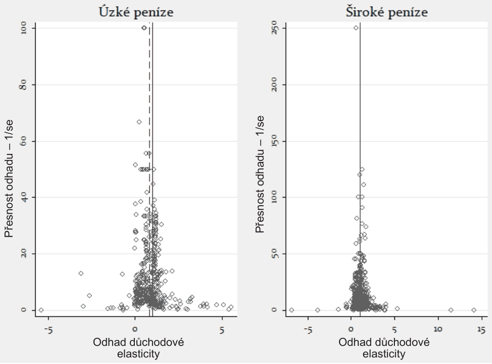
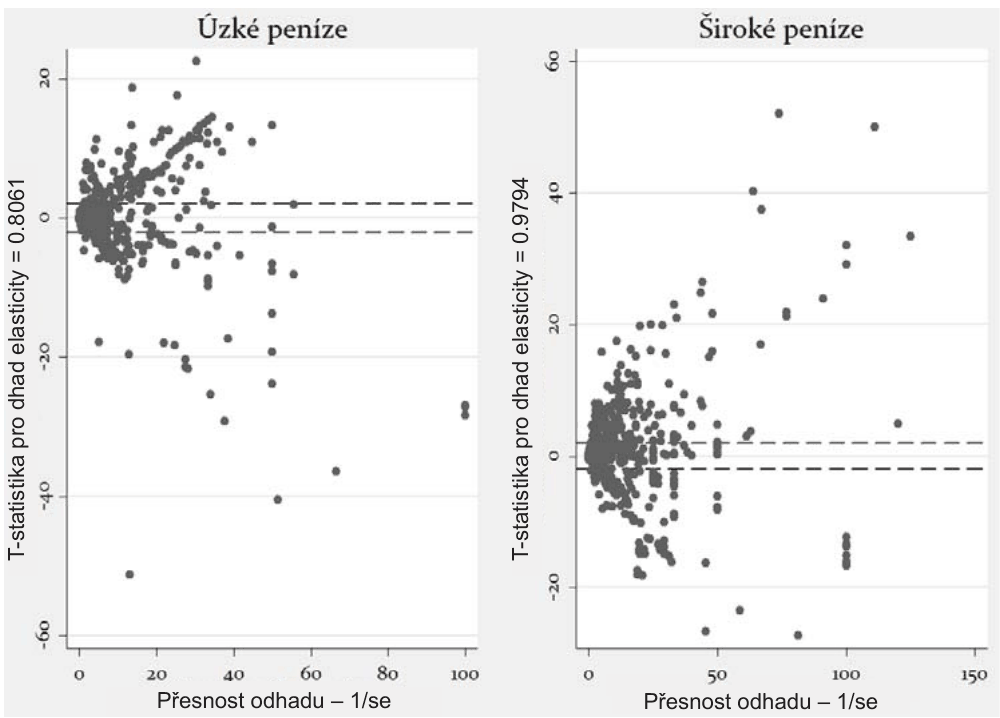

A Meta-Analysis of the Income Elasticity of Money Demand
Tomas Havranek, Jana Sedlarikova (2014), "A Meta-Analysis of the Income Elasticity of Money Demand." Politicka Ekonomie 62(3): 366-382. https://doi.org/10.18267/j.polek.956. The article is written in Czech, and the full text here follows it in Czech. The English abstract at the top is the journal's own, printed at the end of the article.
Tomáš Havránek, Česká národní banka, UK Praha; Jana Sedlaříková, UK Praha*
*Děkujeme Markovi Rusnákovi a Zuzaně Iršové za užitečné připomínky a Markusi Knellovi za poskytnutí seznamu prací použitých v jeho meta-analýze Knell a Stix (2005). Děkujeme za podporu České národní bance. Tomáš Havránek děkuje za podporu projektu GAČR GAP402/12/G097; Jana Sedlaříková děkuje za podporu projektu GAČR P402/11/0948 a GAUK 554213. Názory v tomto příspěvku jsou naše vlastní a neodráží nezbytně oficiální stanovisko ČNB.
Abstract
The income elasticity of money demand is one of the most frequently estimated parameters in economics, but the individual estimates of the elasticity vary a lot. In this paper we present a quantitative survey of the literature estimating this parameter. We collect previous empirical estimates of the elasticity from many studies and analyze why the estimated elasticities differ so much. We test whether the literature is affected by the so-called publication selection bias; that is, if estimates consistent with mainstream theories tend to be published more often. Moreover, we analyze whether the reported estimates of the elasticity differ systematically across countries, estimation methods, and time periods.
Keywords: money demand, income elasticity, meta-analysis, publication bias
1. Úvod
Funkce poptávky po penězích představuje jeden z nejčastěji odhadovaných empirických vztahů v ekonomii, ale jednotlivé odhady parametrů této funkce se mezi sebou velmi liší. V tomto článku se zaměřujeme na důchodovou elasticitu poptávky po penězích. Sbíráme odhady reportované v předchozích studiích a zkoumáme, co způsobuje rozdíly mezi nimi. Využíváme k tomu metod meta-analýzy, což je soubor nástrojů pro kvantitativní souhrn literatury. Meta-analýza byla původně vyvinuta pro účely shrnutí výsledků klinických testů v lékařském výzkumu (Pearson, 1904), ale posléze se rozšířila i do společenských věd včetně ekonomie (Stanley a Jarrell, 1989). V ekonomii má meta-analýza tři hlavní oblasti využití: korekce reportovaných výsledků o publikační selektivitu, korekce o efekty nesprávně zvolené metodologie a zkoumání strukturálních rozdílů v odhadovaném parametru.
Prvním způsobem využití meta-analýzy je agregace výsledků literatury a opravení této agregace o efekty publikační selektivity. Publikační selektivita vzniká, jestliže různé odhady daného parametru mají různou pravděpodobnost publikace s ohledem na jejich velikost, znaménko, nebo statistickou významnost. V ekonomii se mnohdy setkáváme s tím, že statisticky nevýznamné odhady jsou považovány za méně zajímavé, a proto méně vhodné k publikaci. Jak ukazuje Doucouliagos a Stanley (2013), tento problém se pravděpodobně týká velké části empirického výzkumu. Také odhady, které vykazují opačné znaménko, než které pro daný parametr předpokládá teorie, mohou být méně často vybírány k publikaci. Tento druh publikační selektivity dokumentujeme v článku Havránek et al. (2012), který se zabývá cenovou elasticitou poptávky po benzínu. Protože málo výzkumníků předpokládá, že benzín je Giffenovým statkem, téměř žádný z nich nereportuje pozitivní odhady cenové elasticity. Obvyklé ekonometrické metody použité k těmto výpočtům však explicitně nevylučují odhady nekonzistentní s teorií (předpokládají zhruba normální rozdělení odhadů daného parametru), takže neintuitivní výsledky by se vzhledem k zákonům pravděpodobnosti občas v literatuře vyskytnout měly. Pokud reportovány nejsou, výsledkem je v tomto případě nadhodnocení cenové elasticity poptávky po benzínu v absolutním vyjádření.
V kontextu funkce poptávky po penězích předpokládáme, že záporné odhady elasticity jsou vybírány k publikaci méně často než kladné odhady. Záporné odhady implikují, že peníze jsou podřadným statkem, což není intuitivní a odporuje konvenčním teoriím poptávky po penězích. Na druhou stranu je těžké stanovit horní hranici pro důchodovou elasticitu; například Milton Friedman považoval peníze v některých situacích za luxusní statek a sám publikoval odhady elasticity kolem 1,8 (Mason, 1974). Průměrná elasticita by měla být kladná, a záporné odhady jsou tak zřejmě statistickým artefaktem. Protože ale neexistuje přirozená horní hranice pro tuto elasticitu (alespoň u širšího pojetí peněz), není možné zjistit, jak velké odhady jsou už také pouhým artefaktem. Je-li z publikací vyloučena většina záporných odhadů, ale velké pozitivní odhady jsou ponechány, bude literatura celkově vychýlena směrem k vysokým odhadům elasticity. V tomto článku odhadujeme průměrnou elasticitu a testujeme, jestli dochází k publikační selektivitě.
Druhou oblastí využití meta-analýzy v ekonomii je zkoumání vlivu, který mají různé metody odhadu na publikovaný výsledek. V kontextu funkce poptávky po penězích nás zajímá, zda ignorování možného kointegračního vztahu mezi poptávkou po penězích a důchodem systematicky ovlivňuje výsledky. Některé studie odhadující tuto poptávkovou funkci stále používají metodu obyčejných nejmenších čtverců a nezabývají se kointegrací. V nejlepším případě (při existenci kointegračního vztahu) je daný způsob odhadu zatížen vychýlením při malém vzorku dat, ale je konzistentní. V nejhorším případě pak výzkumník odhaduje tzv. zdánlivou regresi. V tomto článku zkoumáme, zda má použití obyčejné metody nejmenších čtverců systematický vliv na výsledek. Třetím způsobem využití meta-analýzy je analýza strukturálních rozdílů v odhadovaném efektu: například v čase nebo mezi různými zeměmi. Snažíme se zjistit, zda je funkce poptávky po penězích reportovaná v empirické literatuře stabilní v čase, či zda se mění. Věnujeme se také rozdílům v důchodové elasticitě mezi zeměmi, protože odhady, které máme k dispozici, používají data pro 83 různých zemí.
Zbytek tohoto článku má následující strukturu. V příští sekci stručně popisujeme, jak je důchodová elasticita poptávky po penězích odhadována a jak jsme sbírali odhady z literatury a jaké vysvětlující proměnné jsme do analýzy zahrnuli. V dalších dvou sekcích zkoumáme publikační selektivitu a vysvětlujeme, proč různí výzkumníci reportují různé odhady elasticity. Článek shrnujeme v poslední sekci, kde také naznačujeme další možnosti využití meta-analýzy v ekonomii. Webová příloha (meta-analysis.cz/money_demand) obsahuje seznam článků použitých v meta-analýze, dodatečné výsledky a také všechna data a kódy použité při výpočtech.
2. Data
Většina empirických studií, na nichž je naše meta-analýza založena, vychází z následujícího tvaru dlouhodobé poptávkové funkce po penězích:
kde symboly psané malými písmeny značí proměnné v logaritmech. Symbol m vyjadřuje velikost peněžní zásoby v čase t. Symbol p značí cenový index reprezentující cenovou hladinu. Výraz m – p tedy představuje poptávku po reálných peněžních zůstatcích v čase t.1 Symbol y potom značí výši důchodu, a tak vzhledem k logaritmickému tvaru rovnice vyjadřuje koeficient důchodovou elasticitu poptávky po penězích.
Většina empirických prací ve svých modelech zohledňuje náklady příležitosti spojené s držbou peněz. Existuje mnoho způsobů, jimiž lze tyto náklady vyjádřit; nejčastěji se k tomu využívá míry inflace, krátkodobé či dlouhodobé úrokové míry, případně jejich dalších obměn v závislosti na teorii, z níž daný model vychází. Tyto proměnné jsou zahrnuty ve vektoru Zt . Model může obsahovat ještě další faktory ovlivňující poptávku po penězích; tyto faktory, jako například proměnné reprezentující bohatství, finanční inovaci, ceny akcií či směnný kurz, jsou obsaženy ve vektoru Xt .
2.1. Sběr dat
První krok meta-analýzy spočívá v sesbírání vhodného vzorku literatury. Zde vycházíme z jediné dostupné meta-analýzy na toto téma, Knell a Stix (2005), a rozšiřujeme použitý vzorek článků o nově publikované studie od roku 2002 (kde končí data set předchozí meta-anlýzy) do března 2012. Pro vyhledávání studií jsme použili následující kritéria: i) název práce obsahuje buď výraz mon* demand nebo mon* stability, ii) v podrobném záznamu o práci je obsažen abstrakt, který umožní rychle zkontrolovat, zda článek obsahuje empirické výsledky a iii) vybrány jsou pouze práce, které byly publikovány v impaktovaném časopise.
Tímto způsobem bylo nalezeno dalších 36 studií zabývajících se poptávkou po penězích, které obsahovaly empirické výsledky. Získali jsme tedy dohromady seznam 128 studií, z nichž nejstarší vyšla roku 1994 a nejnovější v září 2011. Na studie publikované v impaktovaných časopisech se zaměřujeme ze tří důvodů: i) zachováváme konzistenci s první meta-analýzou na toto téma, ii) články publikované v impaktovaných časopisech by měly být v průměru kvalitnější než nepublikované články, iii) nepublikovaných článků je velké množství, a bylo by tak velmi obtížné posbírat z nich všechny odhady elasticity. Absence nepublikovaných článků je ovšem faktorem, který může zvýraznit publikační selektivitu v našem vzorku dat. Je také nutné poznamenat, že u studií publikovaných před rokem 2002 se spoléháme na seznam Knell a Stix (2005) a nekontrolujeme, zda autoři předchozí meta-analýzy nějaké články nevynechali.
Pro získání přesných velikostí dlouhodobých odhadů jednotlivých proměnných je třeba provést jejich normalizaci. Některé práce, jako například Bohl (2000), Sharma a Ericsson (1998) nebo Terasvirta a Eliasson (2001), ovšem tuto normalizaci neprovádějí a zaměřují se pouze na hypotézu dlouhodobé stability funkce poptávky po penězích. Hayo (1999) a Qin (1998) ověřují hypotézu, že se důchodová elasticita rovná jedné; přesný empirický odhad, ke kterému během svého výzkumu dospěli, ovšem neuvádí. Další početná skupina prací, například Rother (1999) nebo Kia (2006), sice uvádí přesné hodnoty odhadnutých parametrů, ale již nedokládají, jak přesné tyto výsledky jsou. Práce Agenor a Khan (1996) se za použití dynamického modelu zabývá pouze relativní poptávkou po penězích a substitučním efektem v rozvojových zemích a výsledky důchodové elasticity explicitně neuvádí. Naopak práce Raj (1995) se spíše než na důchodovou elasticitu soustředí na stabilitu rychlosti oběhu peněz.
Vzhledem k velkému počtu prací, z jejichž výsledků nelze s jistotou vyčíst přesné údaje, jsme se nakonec omezili pouze na studie, které zveřejňují velikost odhadované dlouhodobé elasticity společně s přesností tohoto odhadu (tedy uvádí velikost standardní chyby či t-statistiky). Tímto postupem jsme dospěli k seznamu 73 prací, z nichž 41 pochází z původního seznamu použitého pro práci Knell a Stix (2005); dalších 32 prací reprezentuje novou část datového vzorku. Seznam článků použitých v meta-analýze je uveden ve webové příloze.
2.2. Specifikace a popis proměnných
Po identifikaci vhodného vzorku literatury nastává časově nejnáročnější část celé meta-analýzy, a to sběr a kódování potřebných dat obsažených v literatuře. Během této fáze jsme detailně pročetli všech 73 studií, z nichž jsme postupně sesbírali výslednou datovou matici. Stanley a Jarrell (1989) specifikují základní model meta-regresní analýzy ve tvaru:
kde bj představuje odhad zkoumaného parametru z j-té studie. L určuje celkový počet zkoumaných studií, představuje skutečnou hodnotu odhadovaného parametru a ej je chyba dané meta-regrese. Zjk představuje vektor zahrnující vysvětlující proměnné, které mají pomoci osvětlit, co způsobuje rozdíly mezi jednotlivými odhady v literatuře.
Stanley et al. (2008) navrhují rozdělení jednotlivých proměnných zahrnutých ve vektoru Zjk . První skupinu tvoří klíčové proměnné měřící přesnost empirických odhadů, druhá skupina obsahuje vybrané vlastnosti původního modelu (v našem případě se jedná o obměny rovnice (1)). Třetí skupina obsahuje měřítka kvality daného modelu; těmi může být například počet testů specifikace, kterými model prošel, případně počet stupňů volnosti. Čtvrtá a pátá skupina obsahuje proměnné, které charakterizují autora práce (věk, povolání, pohlaví apod.) a data, s nimiž daná studie pracuje. Proměnných, které sbíráme, je velké množství; proces sběru dat a detailní popis všech proměnných včetně definice jejich zkratek je tak uveden ve webové příloze.
3. Publikační selektivita
První typ publikační selektivity se zakládá na myšlence, že výzkumníci, případně editoři akademických časopisů, mají tendenci upřednostňovat statisticky významné výsledky. Vedle toho upozorňuje Stanley (2005) i na další faktor, který může způsobit vychýlení odhadů v literatuře: druhý typ publikační selektivity je způsobený upřednostňováním výsledků, které budou v souladu s ekonomickou teorií. Toto vychýlení bude pravděpodobně znatelnější v oblastech, kde ekonomové došli ke konsensu ohledně velikosti, či alespoň znaménka daného parametru. V případě, že teoretické studie dojdou k závěru, že by měl být daný parametr kladný (jako je tomu v případě důchodové elasticity poptávky po penězích), nebudou empirické odhady s rozporným znaménkem často vůbec publikovány.
3.1. Grafické testy publikační selektivity
Základní metodou, kterou lze odhalit případnou publikační selektivitu, je grafické zobrazení dat. Postupů, které pro tento účel můžeme použít, existuje několik; nejčastěji se však využívá tzv. trychtýřový graf (funnel plot) nebo Galbraithův graf.
Trychtýřový graf je diagram, který zobrazuje odhady jednotlivých empirických studií na horizontální ose oproti jejich přesnosti na vertikální ose. Přesnost odhadů daného jevu můžeme určit více způsoby. Nejčastěji se k tomu využívá převrácená hodnota jejich standardních chyb (1/se). Pokud nemáme tyto chyby k dispozici, lze přesnost odhadnout také pomocí velikosti vzorku (n) nebo druhých odmocnin těchto vzorků (Stanley, 2005). Vzhledem k tomu, že práce pracující s menšími vzorky dat většinou bývají méně přesné, bude se diagram rozšiřovat směrem dolů (Doucouliagos a Stanley, 2009). Z výsledného tvaru grafu, který v případě nedeformovaných dat vypadá jako převrácený trychtýř, je odvozen i jeho název – trychtýřový graf. V případě, že data nejsou vychýlena v důsledku publikační selektivity, bude graf symetrický.
V obrázku 1 jsme znázornili odděleně odhady elasticit, které jsou založeny na úzce a široce definovaných penězích. Levá část obrázku pro úzké měnové agregáty obsahuje dvě referenční přímky – spojitou přímku pro hodnotu elasticity rovnou 1 a přerušovanou přímku pro vážený průměr s hodnotou rovnou 0,8061 (se = 0,0031). Pravý graf, který reprezentuje široké agregáty, obsahuje pouze jednu referenční přímku pro hodnotu rovnou 1. Druhá referenční přímka není v tomto případě do grafu zanesena, neboť se vážený průměr rovná 0,9794 (se = 0,0025), a obě tyto přímky by tak v daném měřítku splývaly. V případě úzce definovaných peněz můžeme pozorovat jisté publikační vychýlení kolem nulové hodnoty odhadů důchodové elasticity.
Podobný efekt můžeme pozorovat i v bodě, kde se odhady rovnají jedné. Tento jev je intuitivní, neboť teorie, které pracují s úzkou definicí měnových agregátů, dochází k závěru, že důchodová elasticita by neměla být větší než jedna a menší než nula. Nicméně žádná z těchto asymetrií není příliš výrazná, a proto na základě vizuální inspekce trychtýřového grafu nemůžeme s jistotou říci, zda je literatura systematicky publikační selektivitou ovlivněna.

Specifický typ publikační selektivity, který nastává v případě preference signifikantních výsledků, lze odhalit pomocí dalšího grafického testu, Galbraithova grafu. Obecně platí, že by t-statistika, určená jako , neměla pro dostatečně velké vzorky dat přesáhnout hodnoty hodnotu 1,96 ve více než 5 % případů. Symbol TE v našem případě značí skutečnou hodnotu (true effect) důchodové elasticity. Galbraitův graf představuje diagram, který zobrazuje takto získané t-statistiky (standardizované odhady) na vertikální ose oproti přesnosti měření na horizontální ose.
V podstatě se jedná o trychtýřový graf otočený o 90 stupňů a upravený tak, aby odstranil zřejmou heteroskedasticitu. Přesnost měření vyjadřujeme pomocí převrácených hodnot standardních chyb daných odhadů. V našem případě je již na první pohled patrné, že se mimo vymezený interval nachází více než požadovaných 5 % bodů (ve skutečnosti se mimo interval nachází přibližně 58 % bodů pro úzce definované peníze a 68 % odhadů pro široce definované peníze). Z výsledné podoby Galbraithova grafu můžeme tedy usoudit, že naše data mohou být ovlivněna publikační selektivitou prvního typu. Publikační selektivita v této literatuře ovšem působí na obě strany, takže celkové vychýlení je malé, jak ukazuje trychtýřový graf.

3.2. Test asymetrie trychtýřového grafu
Grafické testy publikační selektivity jsou subjektivní a je třeba doplnit je exaktnějšími metodami. Z podobné myšlenky, na které je postaven trychtýřový graf, vychází i test trychtýřové asymetrie (FAT, funnel asymetry test). Vzhledem k tomu, že výsledky založené na malém vzorku dat mají tendenci mít větší standardní chyby, mohou se snažit autoři prací, které jsou omezeni počtem pozorování, specifikovat modely tak, aby získané odhady byly v absolutní hodnotě co největší (tímto způsobem mohou totiž dojít ke statisticky významným odhadům). Ve výsledku tedy můžeme publikační selektivitu odhalit ze závislosti velikosti odhadu a jeho standardní chyby (Stanley et al., 2008). Tento vztah můžeme testovat pomocí následujícího regresního modelu:
kde značí odhad důchodové elasticity a sej jeho chyby. V případě, že data nejsou ovlivněna publikační selektivitou, budou se odhady pohybovat kolem průměrné skutečné hodnoty bez závislosti na velikosti standardní chyby (Stanley, 2005).
Vzhledem k tomu, že proměnná na pravé straně rovnice je funkcí rozptylu proměnné na levé straně, budou chyby v naší meta-regresi trpět heteroskedasticitou (Doucouliagos a Stanley, 2009). Z toho důvodu bývá rovnice (3) v praxi odhadována pomocí metody vážených nejmenších čtverců (WLS, weighted least squares):
kde tj značí t-statistiku daného odhadu a nová chyba měření má konstatní rozptyl. Průsečík této verze FAT testu měří vychýlení dané publikační selektivitou, pomocí koeficientu potom můžeme měřit očištěnou hodnotu odhadu důchodové elasticity (Rusnák et al., 2013).
V tabulce 2 můžeme vidět výsledky testu publikační selektivity provedeného na základě rovnice (4). V prvních dvou sloupcích jsou zobrazeny výsledky pro všechna pozorování, ve zbývajících sloupcích jsou dílčí výsledky pro úzké a široké peníze.2 Odhady metodou OLS jsou doplněny o odhady pomocí instrumentální proměnné (jako instrumentální proměnnou využíváme odmocninu nobs). Ani v jednom případě není konstatna signifikantní na žádné standardní hladině významnosti, a nelze tedy zamítnout nulovou hypotézu neexistence publikační selektivity (H0 : = 0).
Test přesnosti odhadů (PET, precision-effect test) zamítá ve všech případech nulovou hypotézu H0 : = 0, a potvrzuje tak signifikanci skutečných hodnot důchodové elasticity. V případech, kdy byla využita instrumentální proměnná, jsou získané odhady znatelně nižní než v případě OLS. V případě úzce i široce definovaných peněz leží výsledné odhady elasticit mezi hodnotami, které jsme dostali pomocí klasického průměru a průměru váženého pomocí standardních chyb. Opravené velikosti elasticit získané pomocí FAT-PET testu dosahují přibližně 0,79 pro úzce definované peníze a 0,96 pro široké peněžní agregáty.
| Celý vzorek | Úzké peníze | Široké peníze | ||||
|---|---|---|---|---|---|---|
| OLS | IV | OLS | IV | OLS | IV | |
| (efekt) | 0,894*** | 0,811*** | 0,787*** | 0,579 * | 0,955 *** | 0,717*** |
| (0,057) | (0,145) | (0,128) | (0,230) | (0,060) | (0,149) | |
| (zkreslení) | 0,354 | 1,424 | 0,364 | 2,747 | 0,637 | 3,959 |
| (0,486) | (1,791) | (0,747) | (2,911) | (0,711) | (2,646) | |
| N | 911 | 911 | 437 | 437 | 474 | 474 |
| R2 | 0,714 | 0,708 | 0,650 | 0,605 | 0,760 | 0,713 |
Sdružené standardní chyby dle proměnné idstudy v závorkách Závislá proměnná: t-statistika odhadu důchodové elasticity IV – odhad pomcí instrumentální proměnné √nobs *p < 0,05, **p < 0,01, *** p < 0,001
3.3. Víceúrovňový model smíšených efektů
Protože některá data, která používáme v naší meta-analýze, pochází z jedné studie (případně od jednoho autora), můžeme předpokládat, že budou mezi sebou z důvodu stejných výchozích dat, ekonometrických metod a dalších faktorů korelovaná. Taková korelace by mohla zkreslit výsledky, pokud bychom používali tradiční metodu OLS z rovnice (3) nebo její modifikovanou verzi (rovnice (4)). Tento problém se v meta-analytických studiích často řeší pomocí víceúrovňových modelů smíšených efektů (mixed-effects multilevel models), které berou tuto korelaci v potaz (Nelson a Kennedy, 2009):
kde i značí index daného odhadu a j index konkrétní studie (autora). Celková chyba modelu se skládá ze dvou nezávislých částí – z chyby na úrovni studie () a chyby na úrovni odhadů (). Rozptyl celkové chyby lze vyjádřit jako Var() = + , kde symbolizuje rozptyl mezi jednotlivými studiemi a rozptyl uvnitř jednotlivých studií. V případě, že se hodnota blíží nule, ztrácí víceúrovňový model smíšený efektů svoji atraktivitu oproti klasickým metodám OLS nebo WLS. Pro korelaci odhadů v rámci jednotlivých studií platí: ; tento výraz vyjadřuje stupeň závislosti odhadů v rámci jedné studie (nebo ekvivalentně stupeň heterogenity mezi jednotlivými studiemi).
| Celý vzorek | Úzké peníze | Široké peníze | ||||
|---|---|---|---|---|---|---|
| ME1 | ME2 | ME1 | ME2 | ME1 | ME2 | |
| (efekt) | 0,867*** | 0,872*** | 0,783*** | 0,786*** | 0,934*** | 0,934*** |
| (0,017) | (0,017) | (0,027) | (0,027) | (0,020) | (0,021) | |
| (zkreslení) | 1,900** | 1,687* | 0,120 | 0,109 | 2,460** | 2,469* |
| (0,731) | (0,806) | (0,885) | (0,910) | (0,889) | (1,004) | |
| Korelace | 0,508 | 0,515 | 0,392 | 0,391 | 0,561 | 0,572 |
| N | 911 | 911 | 437 | 437 | 474 | 474 |
| Skupiny | 71 | 60 | 34 | 31 | 54 | 45 |
| 308,1*** | 311,9*** | 85,7*** | 83,7*** | 229,2*** | 230,0*** |
Standardní chyby v závorkách Závislá proměnná: t-statistika odhadu důchodové elasticity ME1 a ME2 – víceúrovňový model smíšených efektů dle studií a autorů Korelace – korelace () uvnitř jednotlivých skupin *p < 0,05, **p < 0,01, *** p < 0,001
Výsledky testu publikační selektivity založené na víceúrovňovém modelu z rovnice (5) jsou uvedeny v tabulce 3. Pro srovnání jsme využili dva různé způsoby odhadů – v levých sloupcích jsou uvedeny výsledky pro seskupení dle studií, v pravých sloupcích potom dle autorů. Vzhledem k tomu, že se počty skupin studií a autorů nijak výrazně neliší, nepozorujeme ani žádné významné rozdíly mezi výsledky těchto dvou modelů. Korelace odhadů v rámci jednotlivých studií a autorů se pohybuje v rozmezí od 0,391 pro úzké pěněžní agregáty do 0,572 pro široké peněžní agregáty, což signalizuje poměrně vysokou závislost mezi odhady v rámci skupin. Také likelihood-ratio test zamítá nulovou hypotézu nezávislosti odhadů v rámci skupin (H0 : = 0) pro všechny obměny testu publikační selektivity. To znamená, že OLS model není vhodně specifikovaný a víceúrovňový model smíšených efektů je v tomto případě spolehlivější.
Na rozdíl od testu založeného na OLS metodě signalizují nyní výsledky přítomnost publikační selektivity, a to především v případě, že jsou odhady důchodové elasticity založené na širokých měnových agregátech. Zkreslení této skupiny odhadů se projevuje i v celém vzorku dat, kde jsme také dospěli k signifikantnímu odhadu publikačního vychýlení. Koeficienty nabývají ve všech případech kladných hodnot, což lze interpretovat tak, že autoři studií mají tendenci publikovat kladné výsledky na úkor záporných, čímž zvyšují celkový průměr odhadů. V případě, kdy jsme zohlednili korelaci uvnitř studií, jsme po korekci publikační selektivity získali odhad důchodové elasticity pro úzce definované peníze roven přibližně 0,78 s 95% intervalem spolehlivosti (0,7306; 0,8360). Pro široce definované peníze činí odhadovaná elasticita přibližně 0,94 s 95% intervalem spolehlivosti (0,8956; 0,9737).
4. Rozdíly v odhadech
4.1. Metodologie
Vedle publikační selektivity je odhad skutečné hodnoty elasticity získaný zprůměrováním reportovaných výsledlů nedokonalý i z dalších důvodů. Aritmetický průměr totiž zanedbává případné vlivy způsobené různorodostí primárních studií; některé odhady mohou být nadhodnoceny nebo podhodnoceny z důvodu nesprávné specifikace výchozího modelu. Cílem níže provedené analýzy je zjistit, jaké vlastnosti studií mají vliv na publikované výsledky.
Pro modelování heterogenity využíváme více rozdílných metod a modelů. První model je založený na metodě OLS aplikované na rozšířený model z rovnice (4), tedy základní model FAT-PET testu po korekci heteroskedasticity ve tvaru (Doucouliagos a Stanley, 2009):
kde Z značí vektor vysvětlujících proměnných, kterými jsme se podrobněji zabývali v sekci 2. S ohledem na test publikační selektivity (viz tabulka 3), který ukázal, že mezi daty existuje silná korelace uvnitř jednotlivých studií, využíváme vedle modelu založeného na OLS také upravenou verzi víceúrovňového modelu smíšených efektů z rovnice (5):
kde jsou dané předpoklady exogenity a .
4.2. Obecný model
V prvním kroku jsme do meta-regresního modelu zahrnuli všechny proměnné, které by mohly mít nějaký vliv na velikost odhadů důchodové elasticity. Pro zkoumání heterogenity využíváme dvou alternativním modelů. Do prvního zahrnujeme dummy proměnné pro všechny měnové agregáty, které byly využity v primárních studiích. Ve druhém modelu využíváme pouze dvou dummy proměnných rozlišujících využití úzkých a širokých měnových agregátů. Výsledky těchto regresí jsou uvedeny v tabulce 9 webové přílohy.
Pokud předpokládáme, že se odhady budou lišit s ohledem na geografický původ dat, je standardním postupem zahrnutí dummy proměnných pro každou zemi, na jejíchž datech jsou odhady založené. Protože ale upravená data, která ke zkoumání heterogenity využíváme, pocházejí ze studií pro mnoho různých zemí, znamenalo by zahrnutí všech těchto dummy proměnných velkou ztrátu stupňů volnosti. Z toho důvodu jsme do základního modelu zahrnuli pouze tři dummy proměnné – nonOECD,usa_cu a eu_ch – reprezentující tři největší skupiny zemí. Vedle toho jsme využili dvou dalších modelů, které s původem dat pracují. Prvním z nich je víceúrovňový model smíšených efektů z rovnice (7), kde využíváme seskupení dle země, z níž pochází data, která jsou využita v primárních studiích. Tento model mimo jiné ukazuje, že odhady elasticity z jednotlivých států jsou mezi sebou silně korelovány. Nicméně tato závislost je nižší, než v případě seskupení dle studií, kde se korelace pohybuje kolem 0,6.
V dalším kroku jsme data upravili do podoby panelových dat uspořádaných dle zemí. Takto uspořádaná data jsme použili k odhadu pomocí modelu fixních efektů. Výsledky obou těchto obecných regresních modelů jsou opět uvedeny ve webové příloze v tabulce 10. Vzhledem k tomu, že se v původním modelu velká část proměnných ukázala být nevýznamná, rozhodli jsme se daný model upravit. Vedle pozorování signifikance jednotlivých proměnných jsme provedli také testy sdružené signifikance jednotlivých skupin proměnných ve všech 8 alternativních modelech.
Proměnná nom je signifikantní pouze v případě využití modelů smíšených efektů dle zemí a fixního efektu s jednou dummy proměnnou pro široké měnové agregáty. U proměnných nobs a years jsme také nezískali statisticky významné odhady. Dále jsme vyřadili proměnné reprezentující frekvenci měření dat (quarter a month), které nejenže nejsou samostatně významné, ale ani testy sdružené signifikance nepotvrdily jejich systematický vliv na odhady důchodové elasticity. Nejlepšího výsledku testu jsme dosáhli v případě smíšených efektů s širokým měnovým agregátem, kde ovšem odhady stále vykazovaly sdruženou signifikanci překračující 50% hladinu spolehlivosti (). K podobným výsledkům jsme dospěli i v případě proměnných reprezentujících strukturu použitých dat, tedy pd a cs.
| OLS | ME1 | FE | ME2 | |
|---|---|---|---|---|
| (efekt) | 0,474* | 0,527*** | 0,468*** | 0,480*** |
| (0,180) | (0,062) | (0,057) | (0,055) | |
| (zkreslení) | 0,323 | 0,623 | 1,013*** | 1,335** |
| (0,459) | (0,723) | (0,248) | (0,463) | |
| broad_se | 0,240** | 0,219*** | 0,239*** | 0,257*** |
| (0,088) | (0,035) | (0,035) | (0,033) | |
| cons_se | -0,122 | -0,224*** | -0,121** | -0,149*** |
| (0,105) | (0,041) | (0,038) | (0,037) | |
| index_se | -0,244* | -0,328*** | -0,236*** | -0,265*** |
| (0,114) | (0,041) | (0,038) | (0,036) | |
| exp_se | -0,248 | -0,843 | -0,293 | -0,392 |
| (0,221) | (1,679) | (0,993) | (0,881) | |
| longr_se | 0,157* | 0,187*** | 0,260*** | 0,228*** |
| (0,076) | (0,040) | (0,038) | (0,036) | |
| bothr_se | 0,136 | 0,168* | 0,028 | 0,057 |
| (0,096) | (0,070) | (0,073) | (0,071) | |
| inf_se | 0,010 | 0,087 | 0,100 | 0,078 |
| (0,130) | (0,057) | (0,052) | (0,048) | |
| otherr_se | 0,319*** | 0,381*** | 0,239*** | 0,220*** |
| (0,090) | (0,043) | (0,042) | (0,041) | |
| wealth_se | -0,629*** | -0,613*** | -0,715*** | -0,681*** |
| (0,116) | (0,117) | (0,099) | (0,097) | |
| inovation_se | -0,023 | -0,029 | 0,033 | 0,014 |
| (0,069) | (0,039) | (0,041) | (0,040) | |
| substitution_se | -0,231 | -0,257*** | -0,039 | -0,047 |
| (0,129) | (0,057) | (0,049) | (0,046) | |
| othervar_se | -0,107 | -0,091 | 0,027 | 0,026 |
| (0,124) | (0,056) | (0,053) | (0,051) | |
| otherdummy_se | 0,029 | 0,025 | -0,010 | -0,007 |
| (0,050) | (0,025) | (0,026) | (0,026) | |
| avgyear_se | -0,006* | -0,007*** | -0,003** | -0,002* |
| (0,003) | (0,001) | (0,001) | (0,001) | |
| nonOECD_se | 0,283* | 0,174*** | ||
| (0,110) | (0,041) |
| OLS | ME1 | FE | ME2 | |
|---|---|---|---|---|
| usa_ca_se | -0,333* | -0,468*** | ||
| (0,141) | (0,036) | |||
| eu_ch_se | -0,049 | -0,121*** | ||
| (0,087) | (0,033) | |||
| ardl_se | 0,365* | 0,154* | 0,268*** | 0,278*** |
| (0,142) | (0,065) | (0,064) | (0,061) | |
| joh_se | 0,287* | 0,272*** | 0,138* | 0,168** |
| (0,129) | (0,056) | (0,055) | (0,053) | |
| dols_se | 0,313* | 0,223*** | 0,184*** | 0,205*** |
| (0,129) | (0,052) | (0,053) | (0,051) | |
| fmols_se | 0,407* | 0,203*** | 0,236*** | 0,276*** |
| (0,155) | (0,053) | (0,057) | (0,055) | |
| methodoth_se | -0,019 | -0,071 | -0,067 | -0,055 |
| (0,123) | (0,047) | (0,047) | (0,046) | |
| citations_se | 0,003 | 0,023*** | 0,009** | 0,007** |
| (0,008) | (0,004) | (0,003) | (0,003) | |
| yearpub_se | -0,007 | 0,011** | -0,013*** | -0,012*** |
| (0,008) | (0,004) | (0,003) | (0,003) | |
| Korelace | 0,603 | 0,320 | ||
| N | 911 | 911 | 911 | 911 |
| Skupiny | 71 | 81 | 81 | |
| R2 | 0,850 | 0,839 | ||
| 259,311*** | 209,253*** |
Standardní chyby v závorkách. Podrobné definice proměnných jsou uvedeny ve webové příloze. Závislá proměnná: t-statistika odhadů důchodové elasticity OLS - regrese pomocí OLS, sdružené chyby dle proměnné idstudy ME1, ME2 - víceúrovňový model smíšených efektů dle studií a zemí FE - regrese pomocí fixního efektu panelových dat uspořádaných dle zemí *p < 0,05, **p < 0,01, *** p < 0,001
4.3. Upravený meta-regresní model
Tabulka 4 zobrazuje výsledky upraveného modelu s dummy proměnnou pro široký měnový agregát. Výsledky modelů zahrnujících dummy proměnné pro jednotlivé agregáty jsou potom k dispozici v tabulce 11 webové přílohy.
Koeficient , který poukazuje na případnou přítomnost publikační selektivity, je signifikantní pouze v případech, kdy pracujeme s geografickým původem dat primárních studií. V obou případech (viz druhý a třetí sloupce tabulky 4) zamítáme nulovou hypotézu nepřítomnosti publikační selektivity na 1% hladině významnosti. Naopak v případě odhadů pomocí OLS metody se sdruženými standardními chybami dle studií tuto hypotézu stejně jako v FAT-PET testu (viz tabulka 2) nezamítáme. Přítomnost publikačního vychýlení dat nepotvrzuje ani víceúrovňový model smíšených efektů.
Z výsledků analýzy uvedené v tabulce 4 vyplývá, že proměnné reprezentující důchod sehrávají ve výsledných odhadech elasticity významnou roli. Všechny alternativní modely ukázaly, že reprezentování důchodu pomocí gdp vede k výrazně vyšším odhadům elasticity, než jak je tomu v případě využití spotřeby, osobních příjmů, nebo dalších indexů. Je také důležité, jakým způsobem jsou ve funkci poptávky vyjádřeny náklady příležitosti spojené s držbou peněz. Z tabulky 4 vyplývá, že zahrnutím dlouhodobých úrokových měr namísto krátkodobých se výsledné odhady zvýší o 0,157 až 0,260 v závislosti na použitém meta-regresním modelu. Stejně tak využití obou úrokových měr současně, případně inflace, vede k odhadům vyšším, než je tomu v případě samostatného použití krátkodové úrokové míry.
Na rozdíl od předchozí meta-analýzy nelze v našem případě zamítnout hypotézu nulového koeficientu pro proměnnou reprezentující finanční inovace v žádném z modelů. Naopak při využití víceúrovňového modelu strukturovaného dle studií naše výsledky naznačují významný vliv proměnné měřící substituční efekt. Toto zjištění znamená, že v případě, kdy autor zahrne do funkce poptávky po penězích měnový kurz, zahraniční úrokové sazby či další faktory, které vyjadřují míru substituce dané ekonomiky, sníží se výsledný odhad přibližně o 0,257.
V prvních dvou sloupcích tabulky 4 jsou v modelech zahrnuty dummy proměnné zastupující tři nejvýraznější skupiny zemí, na jejichž datech jsou primární odhady postaveny. Dle předpokladu jsou, především pro případ modelu smíšených efektů, silně signifikantní (ve všech případech jsme zamítli nulovou hypotézu na 1% hladině významnosti), což potvrzuje hypotézu, že velikost důchodové elasticity závisí na geografickém původu dat a podmínkách dané ekonomiky.
Statisticky významné odhady jsme získali také pro proměnnou avgyear, která měří průměrné stáří primárních dat. Znaménko příslušného koeficientu je v případě všech meta-regresních modelů záporné. Použití novějších dat tedy implikuje nižší hodnoty odhadů důchodové elasticity. Tento výsledek odpovídá závěrům, které jsme obdrželi u vlivu finanční inovace. Příslušné koeficienty se na první pohled mohou jevit jako zanedbatelné, nicméně například v případě víceúrovňového modelu dle studií hodnota 0,007 signalizuje, že v průběhu 15 let dojde ke snížení elasticity o 0,105, což značí poměrně výrazný pokles.
Vedle důležitosti použitých proměnných a dalších vlastností primárních studií podpořila naše analýza také hypotézu závislosti důchodové elasticity na použitých ekonometrických technikách. Autoři prací, kteří využívají různých kointegračních technik, docházejí v porovnání s odhady založenými na klasické OLS metodě k výrazně vyšším elasticitám. Rozdíly v koeficientech jednotlivých kointegračních technik již tolik rozdílné nejsou, což přibližně koresponduje se závěry, ke kterým dospěli autoři studie Knell a Stix (2005).
Jistou závislost velikosti odhadů důchodové elasticity jsme nalezli i u publikačních charakteristik primárních studií. Z výsledků zobrazených v tabulce 3 vyplývá, že práce, které byly publikovány v pozdějších letech, uvádějí nižší odhady důchodové elasticity než práce z 90. let. Tato skutečnost je opět v souladu s výše zmiňovanou hypotézou vývoje funkce poptávky po penězích a důchodové elasticity v souvislosti s vývojem finančních trhů. Kladný koeficient proměnné citations lze potom interpretovat tak, že práce, které reportují vyšší hodnoty elasticit, bývají v tomto důsledku častěji citovány.
5. Závěr
V tomto článku sbíráme a analyzujeme téměř tisíc předchozích odhadů důchodové elasticity poptávky po penězích. Odhady se mezi sebou velmi liší, a je tak obtížné udělat si na základě této literatury konkrétní představu o velikosti elasticity bez použití formálních metod. Takovou formální metodou je meta-analýza, která umožňuje nejen agregaci výsledků a odpovídající očištění o vlivy případné publikační selektivity, ale také systematické zkoumání efektů, které na výsledky mají rozdílné použité metody a vlastnosti dat. Svojí povahou je meta-analýza důležitá pro tvůrce hospodářské politiky, protože umožňuje efektivně shrnout často protichůdný ekonomický výzkum na určité téma.
V této meta-analýze nacházíme pouze malé stopy publikační selektivity, což je v rámci ekonomického výzkumu poměrně vzácné (Doucouliagos a Stanley, 2013). Průměrný efekt reportovaný v literatuře je blízký hodnotě 1 a díky absenci významné publikační selektivity není příliš vychýlen. Literatura jako celek se tedy zdá být konzistentní s Fisherovým vyjádřením kvantitativní teorie poptávky po penězích. Naše výsledky také naznačují, že používá-li výzkumník širší definici peněz, pravděpodobně odhadne vyšší hodnotu elasticity. Elasticita se liší mezi zeměmi, když průměrná hodnota reportovaná pro Spojené státy dosahuje zhruba 0,5 (což zhruba odpovídá Baumolově-Tobinově modelu zásob), zatímco pro nečlenské země OECD je tato hodnota vyšší než 1, implikující postavení peněz jako luxusního statku v rozvojových ekonomikách. Zároveň naše výsledky nenaznačují, že by elasticita byla stabilní v čase: zjišťujeme, že každých 15 let je reportovaná elasticita nižší zhruba o 0,1. Ukazujeme také, že metody odhadu jsou důležité pro velikost reportované elasticity. Pokud se výzkumník nezabývá testováním kointegrace a odhaduje elasticitu metodou obyčejných nejmenších čtverců, je pravděpodobné, že skutečnou elasticitu podhodnotí.
Kvalita výsledků meta-analýzy přirozeně závisí na kvalitě studií, jejichž výsledky jsou analyzovány. Jak jsme ukázali, je možné odhadnout vliv některých chyb ve specifikaci těchto studií a případně průměrný efekt o tento vliv opravit, ale pokud jsou všechny studie v nějakém ohledu špatně specifikované, meta-analýza zde nepomůže. V každém případě je tato metoda vhodným doplňkem kvalitativních přehledů empirické literatury, protože umožňuje systematicky shrnout dosavadní výsledky, a plně tak využít předchozí práce mnoha výzkumníků.
Literatura
AGENOR, P. R.; KHAN, M. S. 1996. Foreign currency deposits and the demand for money in developing countries. Journal of Development Economics. 1996, Vol. 50, No. 1, pp. 101–118.
BOHL, M. T. 2000. Nonstationary stochastic seasonality and the German M2 money demand function. European Economic Review. 2000, Vol. 44, No. 1, pp. 61–70.
DOUCOULIAGOS, H.; STANLEY, T. D. 2009. Publication Selection Bias in Minimum-Wage Research? A Meta-Regression Analysis. British Journal of Industrial Relations. 2009, Vol. 47, No. 2, pp. 406–428.
DOUCOULIAGOS, H.; STANLEY, T. D. 2013. Are All Economic Facts Greatly Exaggerated? Theory Competition and Selectivity. Journal of Economic Surveys. 2013, Vol. 27, No. 2, pp. 316–339.
FASE, M. M. G.; WINDER, C. C. A. 1996. Wealth and the demand for money: Empirical evidence for The Netherlands and Belgium. De Economist. 1996, Vol. 144, No. 4, pp. 569–589.
HAVRÁNEK, T.; IRŠOVÁ, Z.; JANDA, K. 2012. Demand for gasoline is more price-inelastic than commonly thought. Energy Economics. 2012, Vol. 34, No. 1, pp. 201–207.
HAYO, B. 1999. Estimating a European Demand for Money. Scottish Journal of Political Economy. 1999, Vol. 46, No. 3, pp. 221-244.
KIA, A. 2006. Economic policies and demand for money: evidence from Canada. Applied Economics. 2006, Vol. 38, No. 12, pp. 1389–1407.
KNELL, M.; STIX, H. 2005. The Income Elasticity of Money Demand: A Meta-Analysis of Empirical Results. Journal of Economic Surveys. 2005, Vol. 19, No. 3, pp. 513–533.
KOMÁREK, L.; MELECKÝ, M. 2004. Money Demand in an Open Transition Economy. Eastern European Economics. 2004, Vol. 42, No. 5, pp. 73–73.
MASON, J. M. 1974. Friedman’s Estimate of the Income Elasticity of Demand for Money. Southern Economic Journal. 1974, Vol. 40, No. 3, pp. 497–499.
NELSON, J.; KENNEDY, P. 2009. The Use (and Abuse) of Meta-Analysis in Environmental and Natural Resource Economics: An Assessment. Environmental and Resource Economics. 2009, Vol. 42, pp. 345–377.
PEARSON, K. 1904. Report on Certain Enteric Fever Inoculation Statistics. British Medical Journal. 1904, 2(2288), pp. 1243–1246.
QIN, D. 1998. Disequilibrium institutional factors in aggregate money demand: evidence from three economies. Journal of Development Economics. 1998, Vol. 57, No. 2, pp. 457–471.
RAJ, B. 1995. Institutional Hypothesis of the Long-Run Income Velocity of Money and Parameter Stability of Money and Parameter Stability of the Equilibrium Relationship. Journal of Applied Econometrics. 1995, Vol. 10, No. 3, pp. 233–253.
ROTHER, P. C. 1999. Money Demand in the West African Economic and Monetary Union--The Problems of Aggregation. Journal of African Economies. 1999, Vol. 8, No. 3, pp. 422–447.
RUSNÁK, M.; HAVRÁNEK, T.; HORVÁTH, R. 2013. How to Solve the Price Puzzle? A Meta-Analysis. Journal of Money, Credit and Banking. 2013, Vol. 45, No. 1, pp. 37–70.
SHARMA, S.; ERICSSON, N. R. 1998. Broad money demand and financial liberalization in Greece. Empirical Economics. 1998, Vol. 23, No. 3, pp. 417–436.
STANLEY, T. D. 2005. Beyond Publication Bias. Journal of Economic Surveys. 2005, Vol. 19, No. 3, pp. 309–345.
STANLEY, T. D.; JARRELL, S. B. 1989. Meta-Regression Analysis: A Quantitative Method of Literature Survey s. Journal of Economic Surveys. 1989, Vol. 3, No. 2, pp. 161–170.
STANLEY, T.D.; DOUCOULIAGOS, C.; JARRELL, S. B. 2008. Meta-regression analysis as the socio-economics of economics research. The Journal of Socio-Economics. 2008, Vol. 37, No. 1, pp. 276–292.
TERASVIRTA, T.; ELIASSON, A.C. 2001. Non-linear error correction and the UK demand for broad money, 1878-1993. Journal of Applied Econometrics. 2001, Vol. 16, No. 3, pp. 277–288.
A META-ANALYSIS OF THE INCOME ELASTICITY OF MONEY DEMAND
Tomáš Havránek, Czech National Bank, Research Deparment, and Charles University in Prague, Institute of Economic Studies, Příkopě 28, CZ – 115 03 Praha 1 (tomas.havranek@cnb.cz); Jana Sedlaříková, Charles University in Prague, Institute of Economic Studies (jana.sedlarikova@gmail.com)
JEL Classification C83, E41, E52
ENDNOTES
- Některé studie, například Fase a Winder (1996) nebo Komárek a Melecký (2004), využívají místo reálné poptávky její nominální vyjádření. Závislou proměnnou tedy vyjadřují pouze velikostí peněžní zásoby m. Proměnnou p často využívají jako další vysvětlující faktor a uvádějí ji na pravé straně rovnice.
- Pro odhad byla použita data očištěná o outliery. Pro kontrolu jsme provedli i odhad pomocí všech 985 pozorování. Takto získané odhady se nijak výrazně nelišily od výsledků z tabulky 1 a jsou uvedené v tabulce 6 webové přílohy.